library(hemp)
cognition <- subset(interest, select = vocab:analyrea)5 Exploratory Factor Analysis
5.1 The Common Factor Model
In the common factor model, variances can be partitioned into common variances and unique variances. Common variances are those due to the common factor, while unique variances include all sources of variance not attributable to the common factor. Unique variance can be decomposed into specific and error variances. Specific variance is due to systematic sources of variability that are unique to the observed indicator. Error variance is due to random measurement variance.
\[ x = \tau + \varepsilon \tag{5.1}\]
\[ \sigma^2_x = \sigma^2_T + \sigma^2_{\varepsilon} \tag{5.2}\]
which we can directly compare to the common factor model we will learn about in this chapter:
\[ x = \mu + \Lambda f + \varepsilon \tag{5.3}\]
\[ Var(x) = \Lambda \Phi \Lambda^T + \psi = \Sigma(\theta) \tag{5.4}\]
5.1.1 Think about these situations
What do you do when you have a large number of variables you are considering as predictors of a dependent variable?
- Often, subsets of these variables are measuring the same, or very similar things.
- We might like to reduce the variables to a smaller number of predictors.
What if you are developing a measurement scale and have a large number of items you think measure the same construct
- You might want to see how strongly the items are related to the construct.
To make sense of these abstract goals, and to help explain the procedures of EFA in this chapter, I will use an example from chapter 4 of Desjardins and Bulut (2018).
This example uses as subset of the interest data which fictitious survey data on cognitive, personality and interest items. A subset of items related to cognition will be used here to follow the description in that text.
First, load the hemp package and create a data frame called cognition.
Then look at a summary of the data.
summary(cognition) vocab reading sentcomp mathmtcs
Min. :-2.62000 Min. :-2.4700 Min. :-2.47000 Min. :-3.7100
1st Qu.:-0.60500 1st Qu.:-0.5175 1st Qu.:-0.55000 1st Qu.:-0.4925
Median : 0.04000 Median : 0.1850 Median : 0.10500 Median : 0.1000
Mean : 0.09016 Mean : 0.1350 Mean : 0.07356 Mean : 0.1055
3rd Qu.: 0.86000 3rd Qu.: 0.7975 3rd Qu.: 0.77500 3rd Qu.: 0.9200
Max. : 2.63000 Max. : 2.7000 Max. : 2.73000 Max. : 3.0600
geometry analyrea
Min. :-3.3200 Min. :-2.8300
1st Qu.:-0.5600 1st Qu.:-0.4825
Median : 0.0900 Median : 0.2000
Mean : 0.1125 Mean : 0.1750
3rd Qu.: 0.7675 3rd Qu.: 0.8375
Max. : 3.8600 Max. : 3.5000 Looking at the output, we see that the means of these variables are close to zero, with the spread of the data being roughly symmetrical around the mean, suggesting that these variables may have been standardized, which entails transforming them into z-scores. If this is the case, we would expect the variances (and standard deviations) to be about 1. We can look at the variances of each of the variables with the combination of the apply() and var() functions. The apply() function allows us to repeat another function over either the rows or columns of a two dimensional data object, such as a data frame. The MARGIN = 2, argument tells the function to appply var() over the columns (MARGIN = 1 would use rows). And the FUN = var argument identifies the function to apply over columns. Note the absence of parentheses after the function var in the call.
apply(cognition, MARGIN = 2, FUN = var) vocab reading sentcomp mathmtcs geometry analyrea
0.9966514 0.9811568 0.9834142 1.1117325 1.0686631 1.1170926 This supports our suspicion of standardized variables. It is often good to have items on the same or similar scales for factor analysis.
The cognition data are organized so that each individual is represented by one row, and their score on each item is contained in a separate column. This format is often called the wide format. To conduct factor analysis (and many other types of analysis) the long format is needed. Instead of separate columns containing the scores for each item, the long format would have all scores in one column and a categorical variable that captures which item each score represents. Therefore, each individual would be represented by multiple rows, one for each item, hence the long in long format.
Below, the reshape() function from base R is used to reshape the data from wide to long format, and store this new data frame in an object named cognition_l (note that the lowercase letter L is appended to the name, not the number 1). This function takes the cognition data (data = cognition), indicated that the first through the sixth columns are the ones to convert (varying = 1:6), names the variable that will contain the cell values from the original data as “score” (v.names = "score"), names the new character variable that describes which column the scores came from as “indicator” (timevar = "indicator"), uses the column names of those columns as the what will become the labels in the new categorical variable, which is a factor in R (times = names(cognition)), and finally tells the function to tranform the data into the “long” format (direction = "long"). The new To learn more about this function you can type ?reshape in to the R console. This transformation create the indicator variable as a charater variable, so we also convert it into a factor.
cognition_l <- reshape(data = cognition,
varying = 1:6,
v.names = "score",
timevar = "indicator",
times = names(cognition),
direction = "long")
# Convert "indicator" into factor using the values as labels
cognition_l$indicator <- factor(cognition_l$indicator)Looking at the first few rows, we can see that this data indeed has one column for the numeric values in the cells of the original data, and a factor variable containing the indicator type.
head(cognition_l[order(cognition_l$id), ]) indicator score id
1.vocab vocab 1.67 1
1.reading reading 1.67 1
1.sentcomp sentcomp 1.46 1
1.mathmtcs mathmtcs 0.90 1
1.geometry geometry 0.49 1
1.analyrea analyrea 1.65 1With this long data frame, we can look at the univariate distribution of the 6 indicators. Below I show how to do that with the lattice package and the ggplot2 package.
library(lattice)
histogram(~ score | indicator, data = cognition_l)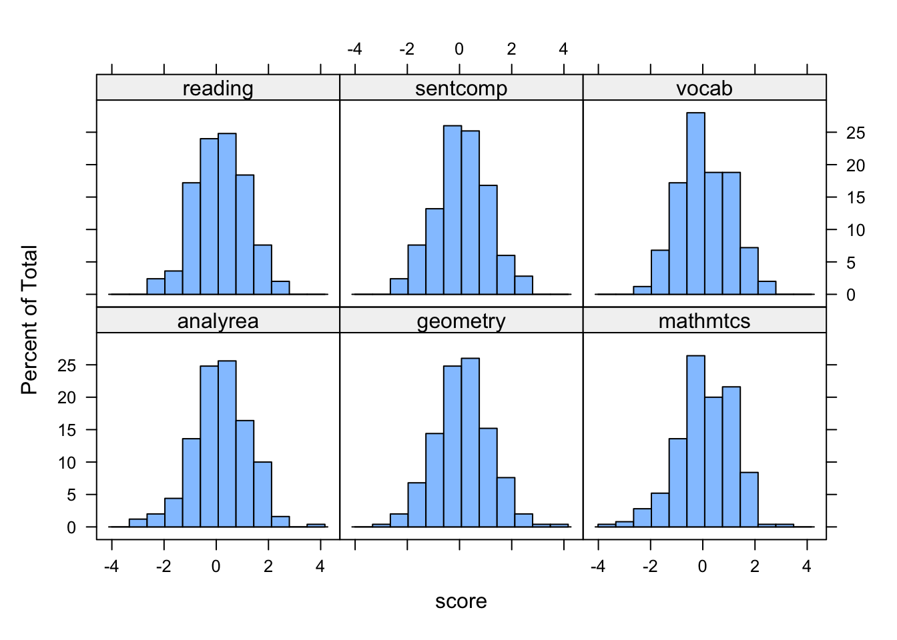
library(ggplot2)
ggplot(cognition_l, aes(x = score)) + geom_histogram() +
facet_wrap(~ indicator )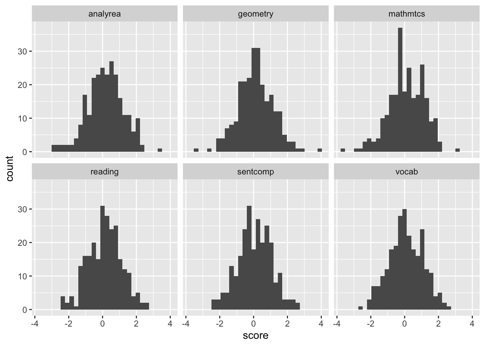
From these plots it seems reasonable to assume these variables are normally distributed, and we also see that these indicators have similar variances and are centered around zero, consistent with them being standardized.
Next we can explore bivariate relations between the indicators. Before calculating correlation coefficients, it is helpful to plot the bivariate relations to evalute the assumptions of correlation coefficients as well as for the factor analysis. The pairs() function is useful for this.
pairs(cognition)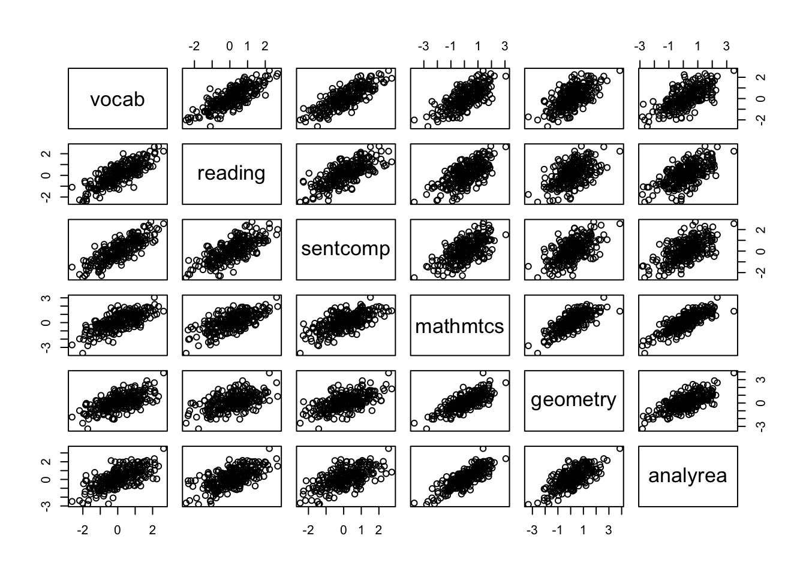
5.1.2 Correlation Coefficient
Pearson product-moment correlation:
\[ r_{xy} = \frac{\Sigma_{n=1}^n (x_k - \bar{x})(y_i - \bar{y})}{\sqrt{\Sigma_{n=1}^n(x_i - \bar{x})^2} \sqrt{\Sigma_{n=1}^n(y_i - \bar{y})^2}} = \frac{s_{xy}}{s_x s_y}. \]
The equation looks very daunting, until you see that it is just the covariance of \(x\) and \(y\) divided by the product of their standard deviations.
correlations <- cor(cognition)
round(correlations, 3) vocab reading sentcomp mathmtcs geometry analyrea
vocab 1.000 0.803 0.813 0.708 0.633 0.673
reading 0.803 1.000 0.725 0.660 0.526 0.636
sentcomp 0.813 0.725 1.000 0.618 0.575 0.618
mathmtcs 0.708 0.660 0.618 1.000 0.774 0.817
geometry 0.633 0.526 0.575 0.774 1.000 0.715
analyrea 0.673 0.636 0.618 0.817 0.715 1.000cor_diff <- correlations - cor(cognition[-c(202, 53, 111), ])
round(cor_diff, 3) vocab reading sentcomp mathmtcs geometry analyrea
vocab 0.000 0.005 0.009 0.000 0.021 0.009
reading 0.005 0.000 0.010 0.016 0.025 0.021
sentcomp 0.009 0.010 0.000 0.009 0.027 0.014
mathmtcs 0.000 0.016 0.009 0.000 -0.004 0.005
geometry 0.021 0.025 0.027 -0.004 0.000 0.015
analyrea 0.009 0.021 0.014 0.005 0.015 0.000bollen_plot(cognition, crit.value = 0.06)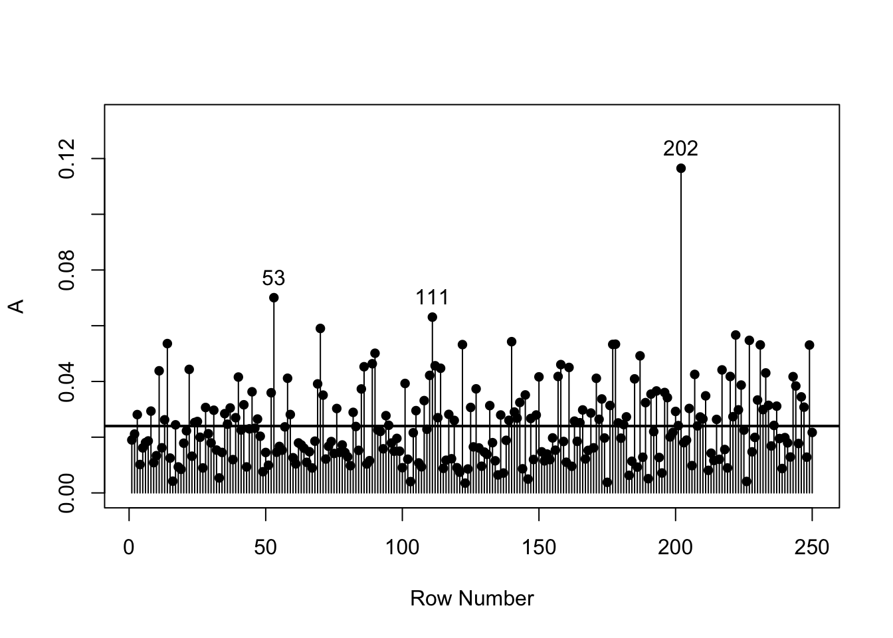
cognition[c(202, 53, 111), ] vocab reading sentcomp mathmtcs geometry analyrea
202 2.63 2.23 2.55 1.38 3.86 3.50
53 -0.38 0.99 -0.50 1.79 -0.19 2.13
111 -2.01 -2.47 -2.47 -3.71 -2.59 -2.67apply(cognition, 2, min) vocab reading sentcomp mathmtcs geometry analyrea
-2.62 -2.47 -2.47 -3.71 -3.32 -2.83 apply(cognition, 2, max) vocab reading sentcomp mathmtcs geometry analyrea
2.63 2.70 2.73 3.06 3.86 3.50 5.2 Solutions
Principal Components Analysis
- transforming the original variables into a new set of linear combinations (pricipal components).
Factor Analysis
- setting up a mathematical model to estimate the number or factors
5.2.1 Principal Components Analysis
- Concerned with explaining variance-covariance structure of a set of variables.
- PCA attempts to explain as much of the total variance among the observed variables as possible with a smaller number of components.
- Because the variables are standardized prior to analysis, the total amount of variance available is the number of variables.
- The goal is data reduction for subsequent analysis.
- Variables cause components.
- Components are not representative of any underlying theory.
5.2.2 Factor Analysis
- The goal is understanding underlying constructs.
- Uses a modified correlation matrix (reduced matrix)
- factors cause the variables.
- Factors represent theoretical constructs.
- Focuses on the common variance of the variables, and purges the unique variance.
5.2.3 Steps in Factor Analysis
- Choose extraction method
- So far we’ve focused on PCA
- EFA is often preferred if you are developing theory
- Determine the number of components/factors
- Kaiser method: eigenvalues > 1
- Scree plot: All components before leveling off
- Horn’s parallel analysis: components/factors greater than simulated values from random numbers
- Rotate Factors
- Orthogonal
- Oblique
- Interpret Components/Factors
5.2.4 “Little Jiffy” method of factor analysis
- Extraction method : PCA
- Number of factors: eigenvalues > 1
- Rotation: orthogonal(varimax)
- Interpretation
Following these steps without thought can lead to many problems (see Preacher and MacCallum 2003)
5.2.5 Eigenvalues
Eigenvalues represent the variance in the variables explained by the success components.
5.2.6 Determining the Number of Factors
- Kaiser criterion: Retain only factors with eigenvalues > 1. (generally accurate)
- Scree plot: plot eigenvalues and drop factors after leveling off.
- Parallel analysis: compare observed eigenvalues to parallel set of data from randomly generated data. Retain factors in original if eigenvalue is greater than random eigenvalue.
- Factor meaningfulness is also very important to consider.
5.2.6.1 Kaiser
Retain factors with eigenvalues greater than 1
eigen_decomp <- eigen(correlations)
round(eigen_decomp$values, 3)[1] 4.436 0.676 0.322 0.245 0.168 0.1525.2.6.2 Scree Plot
scree(cognition, pc = FALSE)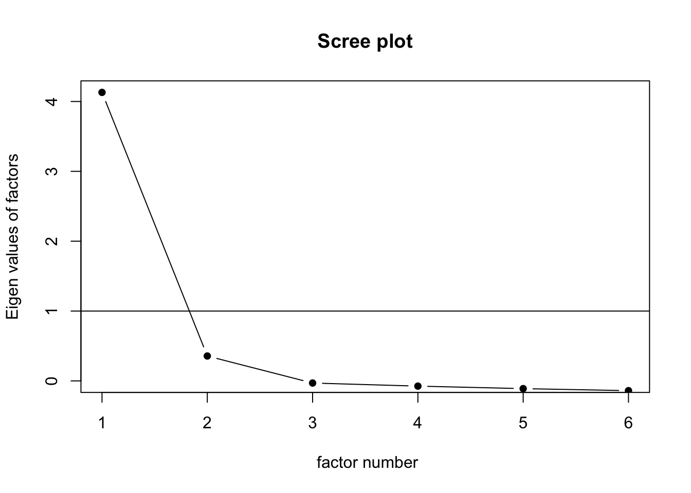
5.2.6.3 Horn’s Parallel Analysis
fa.parallel(cognition, fm = "ml")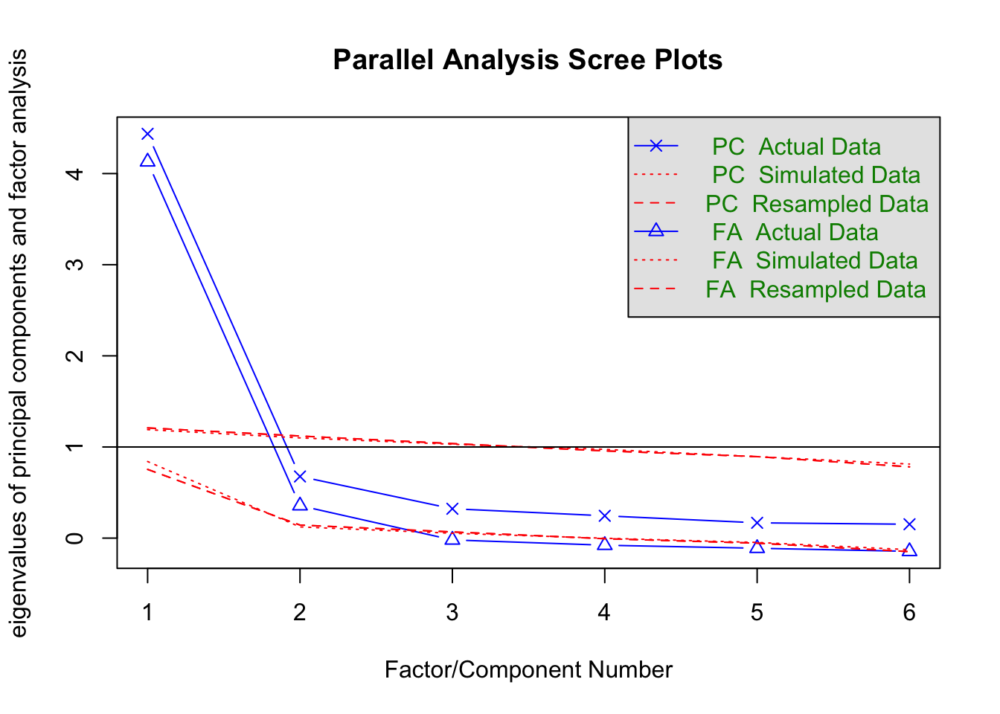
Parallel analysis suggests that the number of factors = 2 and the number of components = 1 Using these conventions we can rewrite the classic test score model as:
principal(correlations)Principal Components Analysis
Call: principal(r = correlations)
Standardized loadings (pattern matrix) based upon correlation matrix
PC1 h2 u2 com
vocab 0.90 0.81 0.19 1
reading 0.84 0.71 0.29 1
sentcomp 0.84 0.71 0.29 1
mathmtcs 0.89 0.79 0.21 1
geometry 0.82 0.67 0.33 1
analyrea 0.86 0.75 0.25 1
PC1
SS loadings 4.44
Proportion Var 0.74
Mean item complexity = 1
Test of the hypothesis that 1 component is sufficient.
The root mean square of the residuals (RMSR) is 0.09
Fit based upon off diagonal values = 0.98one_factor <- fa(r = cognition, nfactors = 1, rotate = "oblimin")
one_factorFactor Analysis using method = minres
Call: fa(r = cognition, nfactors = 1, rotate = "oblimin")
Standardized loadings (pattern matrix) based upon correlation matrix
MR1 h2 u2 com
vocab 0.89 0.79 0.21 1
reading 0.81 0.65 0.35 1
sentcomp 0.80 0.65 0.35 1
mathmtcs 0.87 0.76 0.24 1
geometry 0.77 0.59 0.41 1
analyrea 0.84 0.70 0.30 1
MR1
SS loadings 4.13
Proportion Var 0.69
Mean item complexity = 1
Test of the hypothesis that 1 factor is sufficient.
df null model = 15 with the objective function = 5.11 with Chi Square = 1257.24
df of the model are 9 and the objective function was 0.71
The root mean square of the residuals (RMSR) is 0.07
The df corrected root mean square of the residuals is 0.1
The harmonic n.obs is 250 with the empirical chi square 41.32 with prob < 4.4e-06
The total n.obs was 250 with Likelihood Chi Square = 173.3 with prob < 1.3e-32
Tucker Lewis Index of factoring reliability = 0.779
RMSEA index = 0.27 and the 90 % confidence intervals are 0.236 0.307
BIC = 123.61
Fit based upon off diagonal values = 0.99
Measures of factor score adequacy
MR1
Correlation of (regression) scores with factors 0.97
Multiple R square of scores with factors 0.94
Minimum correlation of possible factor scores 0.87two_factor <- fa(r = cognition, nfactors = 2, rotate = "oblimin")
two_factorFactor Analysis using method = minres
Call: fa(r = cognition, nfactors = 2, rotate = "oblimin")
Standardized loadings (pattern matrix) based upon correlation matrix
MR1 MR2 h2 u2 com
vocab 0.95 0.00 0.90 0.10 1
reading 0.83 0.02 0.72 0.28 1
sentcomp 0.87 -0.02 0.74 0.26 1
mathmtcs -0.03 0.96 0.89 0.11 1
geometry -0.02 0.84 0.68 0.32 1
analyrea 0.07 0.81 0.76 0.24 1
MR1 MR2
SS loadings 2.36 2.31
Proportion Var 0.39 0.38
Cumulative Var 0.39 0.78
Proportion Explained 0.51 0.49
Cumulative Proportion 0.51 1.00
With factor correlations of
MR1 MR2
MR1 1.0 0.8
MR2 0.8 1.0
Mean item complexity = 1
Test of the hypothesis that 2 factors are sufficient.
df null model = 15 with the objective function = 5.11 with Chi Square = 1257.24
df of the model are 4 and the objective function was 0.05
The root mean square of the residuals (RMSR) is 0.01
The df corrected root mean square of the residuals is 0.03
The harmonic n.obs is 250 with the empirical chi square 1.42 with prob < 0.84
The total n.obs was 250 with Likelihood Chi Square = 11.64 with prob < 0.02
Tucker Lewis Index of factoring reliability = 0.977
RMSEA index = 0.087 and the 90 % confidence intervals are 0.031 0.148
BIC = -10.44
Fit based upon off diagonal values = 1
Measures of factor score adequacy
MR1 MR2
Correlation of (regression) scores with factors 0.97 0.97
Multiple R square of scores with factors 0.94 0.94
Minimum correlation of possible factor scores 0.88 0.875.2.7 EFA with Categorical Data
SAPA_subset <- subset(SAPA, select = c(letter.7:letter.58,
rotate.3:rotate.8))
fa.parallel(SAPA_subset, cor = "poly")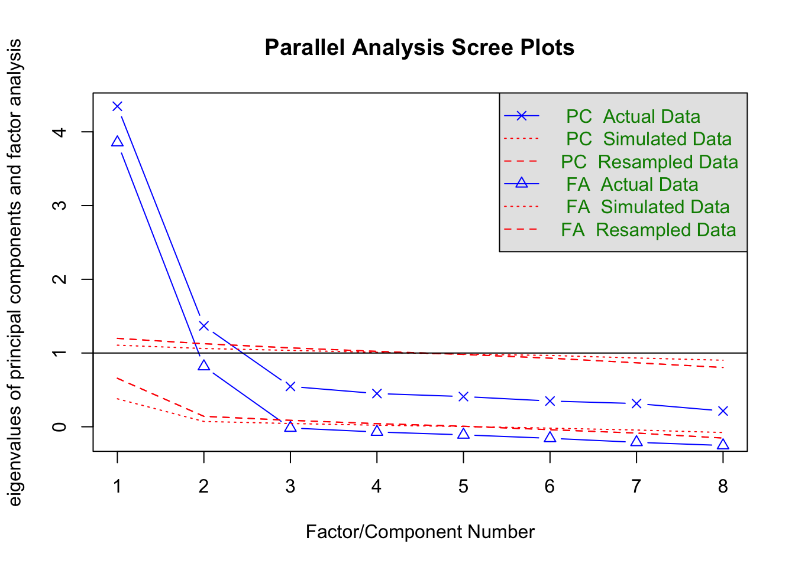
Parallel analysis suggests that the number of factors = 2 and the number of components = 2 EFA_SAPA <- fa(r = SAPA_subset, nfactors = 2, rotate = "oblimin",
cor = "poly")
EFA_SAPAFactor Analysis using method = minres
Call: fa(r = SAPA_subset, nfactors = 2, rotate = "oblimin", cor = "poly")
Standardized loadings (pattern matrix) based upon correlation matrix
MR1 MR2 h2 u2 com
letter.7 -0.02 0.79 0.60 0.40 1.0
letter.33 0.01 0.70 0.50 0.50 1.0
letter.34 -0.02 0.80 0.63 0.37 1.0
letter.58 0.21 0.54 0.46 0.54 1.3
rotate.3 0.86 -0.02 0.72 0.28 1.0
rotate.4 0.82 0.10 0.77 0.23 1.0
rotate.6 0.77 0.05 0.64 0.36 1.0
rotate.8 0.86 -0.09 0.65 0.35 1.0
MR1 MR2
SS loadings 2.84 2.13
Proportion Var 0.36 0.27
Cumulative Var 0.36 0.62
Proportion Explained 0.57 0.43
Cumulative Proportion 0.57 1.00
With factor correlations of
MR1 MR2
MR1 1.00 0.56
MR2 0.56 1.00
Mean item complexity = 1
Test of the hypothesis that 2 factors are sufficient.
df null model = 28 with the objective function = 4.26 with Chi Square = 6477.4
df of the model are 13 and the objective function was 0.06
The root mean square of the residuals (RMSR) is 0.02
The df corrected root mean square of the residuals is 0.02
The harmonic n.obs is 1523 with the empirical chi square 22.69 with prob < 0.046
The total n.obs was 1525 with Likelihood Chi Square = 97.39 with prob < 5.3e-15
Tucker Lewis Index of factoring reliability = 0.972
RMSEA index = 0.065 and the 90 % confidence intervals are 0.053 0.078
BIC = 2.1
Fit based upon off diagonal values = 1
Measures of factor score adequacy
MR1 MR2
Correlation of (regression) scores with factors 0.95 0.92
Multiple R square of scores with factors 0.91 0.84
Minimum correlation of possible factor scores 0.81 0.685.3 Another Example
library("MPsychoR")
data("YouthDep")
item1 <- YouthDep[, 1]
levels(item1) <- c("0", "1", "1")
item2 <- YouthDep[, 14]
levels(item2) <- c("0", "1", "1")
table(item1, item2) item2
item1 0 1
0 1353 656
1 115 166## ------ correlation coefficients
library("psych")
tetcor <- tetrachoric(cbind(item1, item2))tetcorCall: tetrachoric(x = cbind(item1, item2))
tetrachoric correlation
item1 item2
item1 1.00
item2 0.35 1.00
with tau of
item1 item2
1.16 0.36 item1 <- YouthDep[, 1]
item2 <- YouthDep[, 14]
polcor <- polychoric(cbind(item1, item2))
polcorCall: polychoric(x = cbind(item1, item2))
Polychoric correlations
item1 item2
item1 1.00
item2 0.33 1.00
with tau of
1 2
item1 1.16 2.3
item2 0.36 1.2draw.tetra(r = .35, t1 = 1.16, t2 = .36)
DepItems <- YouthDep[,1:26]
Depnum <- data.matrix(DepItems) - 1 ## convert to numeric
Rdep <- polychoric(Depnum)5.3.1 Example data
lower <- "
1.00
0.70 1.00
0.65 0.66 1.00
0.62 0.63 0.60 1.00
"
cormat <- getCov(lower, names = c("d1", "d2", "d3", "d4"))
cormat d1 d2 d3 d4
d1 1.00 0.70 0.65 0.62
d2 0.70 1.00 0.66 0.63
d3 0.65 0.66 1.00 0.60
d4 0.62 0.63 0.60 1.005.3.2 Kaiser
Retain factors with eigenvalues greater than 1
eigen(cormat)$values[1] 2.9311792 0.4103921 0.3592372 0.29919165.3.3 Scree Plot
scree(cormat, factors = FALSE)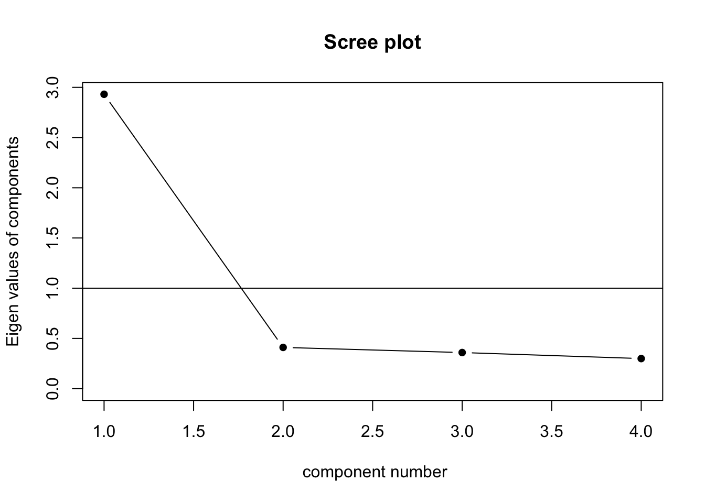
5.3.4 Horn’s Parallel Analysis
fa.parallel(cormat, fa = "pc")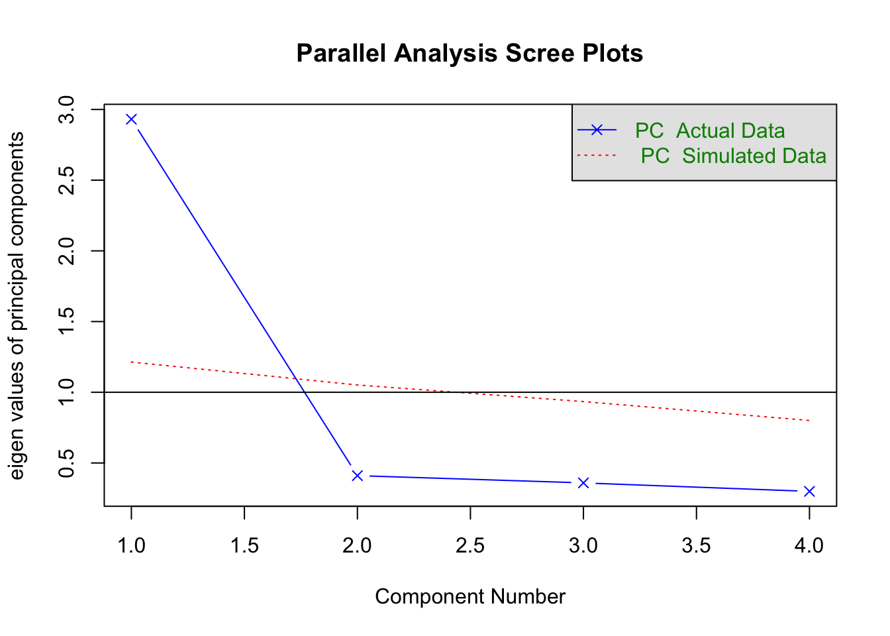
Parallel analysis suggests that the number of factors = NA and the number of components = 1 5.4 Another example
fa.parallel(Harman74.cor$cov, fa = "pc")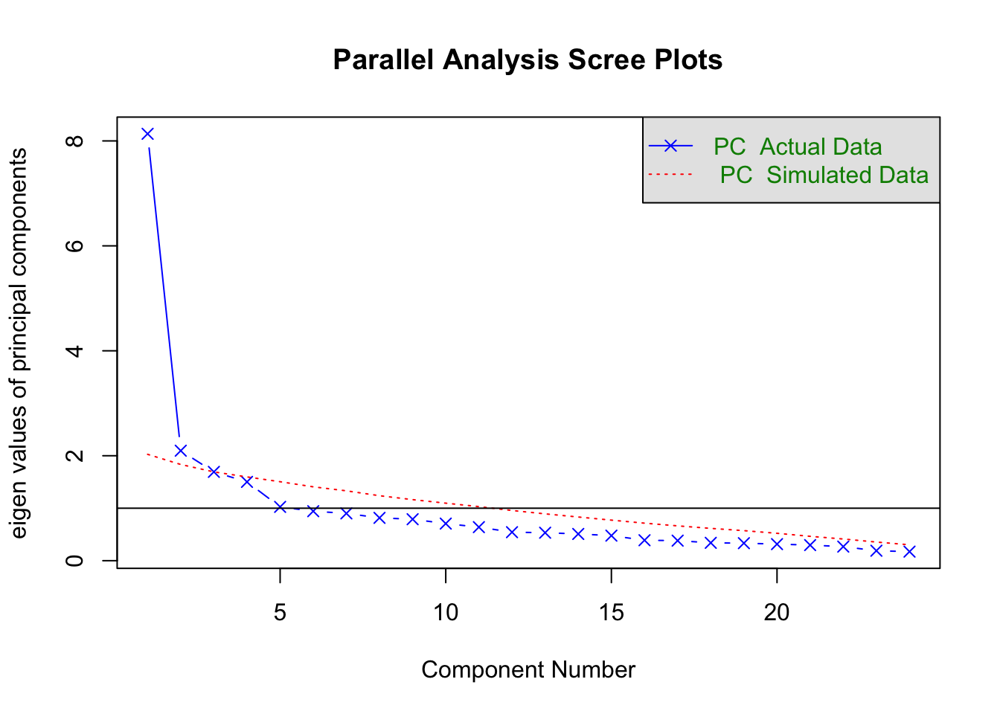
Parallel analysis suggests that the number of factors = NA and the number of components = 2 5.4.1 Rotation
- Principal components are derived to maximize the variance accounted for (data reduction).
- Rotation is done to make the factors more interpretable (i.e. meaningful).
- Two major classes of rotation:
- Orthogonal - new factors are still uncorrelated, as were the initial factors.
- Oblique - new factors are allowed to be correlated.
Essentially reallocates the loadings. The first factor may not be the one accounting for the most variance.
5.4.2 Orthogonal Rotation
Quartimax - idea is to clean up the variables. Rotation done so each variable loads mainly on one factor. Problematic if there is a general factor on which most or all variables load on (think IQ).
Varimax - to clean up factors. So each factor has high correlation with a smaller number of variables, low correlation with the other variables. Generally makes interpretation easier.
5.4.3 Oblique Rotation
- Often correlated factors are more reasonable.
- Therefore, oblique rotation is often preferred.
- But interpretation is more complicated.
5.4.4 Factor Matrices
- Factor pattern matrix:
- includes pattern coefficients analogous to standardized partial regression coefficients.
- Indicated the unique importance of a factor to a variable, holding other factors constant.
- Factor structure matrix:
- includes structure coefficients which are simple correlations of the variables with the factors.
5.4.5 Which matrix should we interpret?
When orthogonal rotation is used interpret structural coefficients (but they are the same as pattern coefficients).
When oblique rotation is used pattern coefficients are preferred because they account for the correlation between the factors and they are parameters of the correlated factor model (which we will discuss next class).
5.4.6 Which variables should be used to interpret each factor?
- The idea is to use only those variables that have a strong association with the factor.
- Typical thresholds are |.30| or |.40|.
- Content knowledge is critical.
5.5 Tom Swift’s Electric Factor Analysis Factory
5.5.1 Steps in Factor Analysis
- Choose extraction method
- So far we’ve focused on PCA
- Determine the number of components/factors
- Kaiser method: eigenvalues > 1
- Scree plot: All components before leveling off
- Horn’s parallel analysis: components/factors greater than simulated values from random numbers
- Rotate Factors
- Orthogonal
- Oblique
- Interpret Components/Factors
5.5.2 “Little Jiffy” method of factor analysis
- Extraction method : PCA
- Number of factors: eigenvalues > 1
- Rotation: orthogonal(varimax)
- Interpretation
5.5.3 Metal Boxes
| Dimension | Derivation |
|---|---|
| Thickness | x |
| Width | y |
| Length | z |
| Volume | xyz |
| Density | d |
| Weight | xyzd |
| Surface area | 2(xy + xz + yz) |
| Cross-section | yz |
| Edge length | 4(x + y + z) |
| Diagonal length | (x^2) |
| Cost/lb | c |
'data.frame': 63 obs. of 11 variables:
$ thick : num 1.362 1.83 0.567 1.962 1.762 ...
$ width : num 1.71 4.01 1.86 1.71 1.95 ...
$ length : num 4.93 5.2 4.31 3.91 4.1 ...
$ volume : num 10.02 39.59 8.02 16.02 15.92 ...
$ density : int 17 6 4 14 7 4 1 1 14 8 ...
$ weight : num 170 240.1 32.1 224 111.6 ...
$ surface : num 34 76.1 28.1 39.5 40.4 ...
$ crosssec: num 9.87 19.94 7.94 8.22 8.24 ...
$ edge : num 31.9 43.9 27.9 31.5 31.7 ...
$ diagonal: num 900 2025 441 576 576 ...
$ cost : num 9.73 14.13 -2.92 6.78 7.62 ...5.5.4 Correlations
| thick | width | length | volume | density | weight | surface | crosssec | edge | diagonal | cost | |
|---|---|---|---|---|---|---|---|---|---|---|---|
| thick | 1.00 | 0.43 | 0.28 | 0.78 | -0.16 | 0.53 | 0.69 | 0.40 | 0.60 | 0.48 | -0.01 |
| width | 0.43 | 1.00 | 0.50 | 0.78 | -0.10 | 0.54 | 0.86 | 0.88 | 0.84 | 0.74 | 0.04 |
| length | 0.28 | 0.50 | 1.00 | 0.60 | 0.13 | 0.54 | 0.73 | 0.82 | 0.82 | 0.87 | 0.22 |
| volume | 0.78 | 0.78 | 0.60 | 1.00 | -0.09 | 0.69 | 0.97 | 0.81 | 0.90 | 0.86 | 0.07 |
| density | -0.16 | -0.10 | 0.13 | -0.09 | 1.00 | 0.53 | -0.05 | 0.01 | -0.02 | 0.04 | 0.83 |
| weight | 0.53 | 0.54 | 0.54 | 0.69 | 0.53 | 1.00 | 0.71 | 0.64 | 0.69 | 0.68 | 0.55 |
| surface | 0.69 | 0.86 | 0.73 | 0.97 | -0.05 | 0.71 | 1.00 | 0.93 | 0.97 | 0.92 | 0.11 |
| crosssec | 0.40 | 0.88 | 0.82 | 0.81 | 0.01 | 0.64 | 0.93 | 1.00 | 0.95 | 0.94 | 0.15 |
| edge | 0.60 | 0.84 | 0.82 | 0.90 | -0.02 | 0.69 | 0.97 | 0.95 | 1.00 | 0.92 | 0.14 |
| diagonal | 0.48 | 0.74 | 0.87 | 0.86 | 0.04 | 0.68 | 0.92 | 0.94 | 0.92 | 1.00 | 0.17 |
| cost | -0.01 | 0.04 | 0.22 | 0.07 | 0.83 | 0.55 | 0.11 | 0.15 | 0.14 | 0.17 | 1.00 |
5.5.5 Eigenvalues > 1
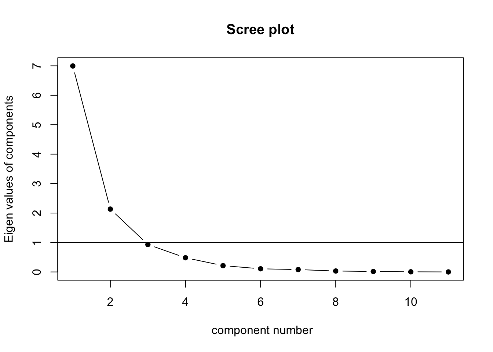
5.5.6 Orthogonal Rotation
Loadings:
RC1 RC4 RC3 RC2 RC5
thick 0.962
width 0.926
length 0.955
volume
density 0.942
weight
surface
crosssec 0.705
edge
diagonal 0.775
cost 0.960
RC1 RC4 RC3 RC2 RC5
SS loadings 3.165 2.913 2.226 2.193 0.263
Proportion Var 0.288 0.265 0.202 0.199 0.024
Cumulative Var 0.288 0.552 0.755 0.954 0.9785.5.7 Orthogonal Rotation with Loadings > .70
Loadings:
RC1 RC3 RC2
thick 0.937
width 0.795
length 0.885
volume 0.709
density 0.962
weight
surface 0.843
crosssec 0.967
edge 0.903
diagonal 0.923
cost 0.933
RC1 RC3 RC2
SS loadings 5.564 2.265 2.233
Proportion Var 0.506 0.206 0.203
Cumulative Var 0.506 0.712 0.915
Desjardins, Christopher D, and Okan Bulut. 2018. Handbook of Educational Measurement and Psychometrics Using r. CRC Press.
Preacher, Kristopher J., and Robert C. MacCallum. 2003. “Repairing Tom Swifts electric Factor Analysis Machine.” Understanding Statistics 2 (1): 13–43. https://doi.org/10.1207/s15328031us0201_02.